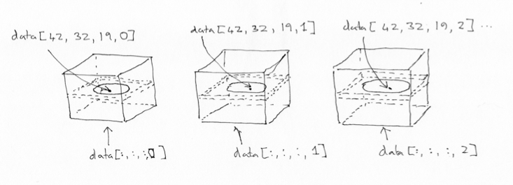

Working with four dimensional images, masks and functions
Contents
Working with four dimensional images, masks and functions¶
#: Our usual imports
import numpy as np # the Python array package
import matplotlib.pyplot as plt # the Python plotting package
Loading data with Nibabel¶
Nibabel allows us to load images. First we need to import the nibabel
library:
import nibabel as nib
We are going to load the image with filename ds114_sub009_t2r1.nii.
First we use the nipraxis utility to find the file on the web and download
it to the computer we are working on.
# Import the utility.
import nipraxis
# Use the fetch_file function to find the file and download
# it to this computer.
image_fname = nipraxis.fetch_file('ds114_sub009_t2r1.nii')
# Show the filename of the downloaded file.
image_fname
Downloading file 'ds114_sub009_t2r1.nii' from 'https://raw.githubusercontent.com/nipraxis/nipraxis-data/0.3/ds114_sub009_t2r1.nii' to '/home/runner/.cache/nipraxis/0.3'.
'/home/runner/.cache/nipraxis/0.3/ds114_sub009_t2r1.nii'
Next we load the image, to give me an “image” object:
img = nib.load(image_fname)
type(img)
nibabel.nifti1.Nifti1Image
You can explore the image object with img. followed by the Tab key at the
Jupyter / IPython prompt.
Saving memory¶
Because images can have large arrays, Nibabel does not load the image array
when you load the image, in order to save time and memory. The best way to
get the image array data is with the get_fdata() method.
data = img.get_fdata()
type(data)
numpy.memmap
See Nibabel images and memory for more detail.
Four dimensional arrays: space + time¶
The image we have just loaded is a four-dimensional image, with a four-dimensional array:
data.shape
(64, 64, 30, 173)
The first three axes represent three dimensional space. The last axis represents time. Here the last (time) axis has length 173. This means that, for each of these 173 elements, there is one whole three dimensional image. We often call the three-dimensional images volumes. So we could say that this 4D image contains 173 volumes.
We have previously been taking slices over the third axis of a three-dimensional image. We can now take slices over the fourth axis of this four-dimensional image:
# A slice over the final (time) axis
first_vol = data[:, :, :, 0]
This slice selects the first three-dimensional volume (3D image) from the 4D array:
first_vol.shape
(64, 64, 30)
You can use the ellipsis ... when slicing an array. The ellipsis is a
short cut for “everything on the previous axes”. For example, these two have
exactly the same meaning:
first_vol = data[:, :, :, 0] # All rows, all columns, all planes, vol 0
first_vol_again = data[..., 0] # The same thing, using the ellipsis
first_vol is a 3D image just like the 3D images you have already seen:
# A slice over the third axis (dimension).
plt.imshow(first_vol[:, :, 14], cmap='gray')
<matplotlib.image.AxesImage at 0x7fef62b0ca90>
The voxel time course¶
We can think of this 4D data as a series of 3D volumes. That is the way we have been thinking of the 4D data so far:
# This is slicing over the last (time) axis
first_vol = data[..., 0]
first_vol.shape
(64, 64, 30)
We can also index over the first three axes. The first three axes in this array represent space.
The first axis goes from right to left (0 index value means right, 63 means left);
The second axis goes from back to front (0 index value means back, 63 means front);
The third axes goes from bottom to top (0 means bottom, 29 means top).
If you give me index values for these first three axes, you have given me a coordinate in the first three axes of the array.
For example, you could give me an index tuple for the first three axes like
this: (42, 32, 19). The first index of 42 refers to a position towards
the left of the brain (> 31). The second index of 32 refers to a position
almost in the center front to back. The last index of 19 refers to a position
a little further towards the top of the brain – in this image.
This coordinate therefore refers to a particular part of the image:
# Where is this in the brain?
# Don't worry about this line, we come to that soon.
mean_data = np.mean(data, axis=-1)
# Make a nice bright dot in the right place
mean_data[42, 32, 19] = np.max(mean_data)
plt.imshow(mean_data[:, :, 19], cmap='gray', interpolation='nearest')
<matplotlib.image.AxesImage at 0x7fef6099d940>

If we slice into the data array with these coordinates, we will get a vector, with the image value at that position (43, 32, 19), for every point in time:
# This is slicing over all three of the space axes
voxel_time_course = data[42, 32, 19, :]
voxel_time_course.shape
(173,)

# Do a plot of these values.
plt.plot(voxel_time_course)
plt.xlabel('Volume index')
plt.ylabel('Signal')
plt.title('Voxel time course');
We could call this a “voxel time course”.
Numpy operations work on the whole array by default¶
Numpy operations like mean and min, and max and std operate on the
whole numpy array by default, ignoring any array shape. For example, here is
the maximum value for the whole 4D array:
np.max(data)
6793.0
This is exactly the same as:
# Maximum when flattening the array to 1 dimension
np.max(data.ravel())
6793.0
You can ask Numpy to operate over particular axes instead of operating over the whole array. For example, this will generate a 3D image, where each array value is the mean over the 173 values at the corresponding 3D position (the mean across time):
# Mean across the final (time) axis
mean_vol = np.mean(data, axis=3)
# Show the middle plane of this mean volume.
plt.imshow(mean_vol[:, :, 14], cmap='gray')
<matplotlib.image.AxesImage at 0x7fef608ff670>